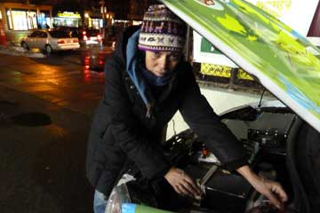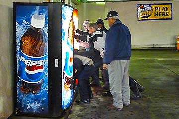
Her på Manhattan har jeg Grønne, stået i flere dage imens Hjalte og Nina var i Danmark. Selvfølgelig var jeg en smule nervøs, der er uvant for mig at være alene og folk her i kvarteret er sorte. Heldigvis var det de flinkeste mennesker jeg har mødt og for første gang nogensinde fik jeg strøm på en tankstation. De måtte endda flytte en Pepsi-automat for at komme ind til kontakten. Da sneen begyndte at fyge kunne jeg næsten ikke se noget, så jeg lukkede øjnene og da jeg vågnede igen havde jeg fået en dejlig tyk snedyne på.
Grønne
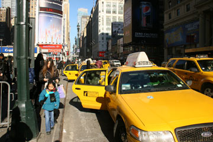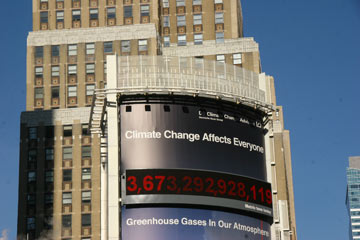
New York modtog os med strålende solskin. På et højhus midt på Manhattan viste en tæller hvor mange tons drivhusgasser der befinder sig i atmosfæren. Tallet er astronomisk og vokser uafbrudt. 3,673,292,928,11 tons. Grønne sparer ca. 100 gram CO2 for hver kilometer i forhold til Qashqai benzinversion. På vores rejse har vi indtil nu kørt 20.000 km og sparet atmosfæren for 2 tons CO2. Hvis alle biler i New York blev elektriske kunne vi se tælleren begynde at gå nedad.
Hjalte
Da turen startede kørte Hjalte og jeg i hver sin bil, Grønne og Blå. Men fra Moskva måtte den Blå Bil sendes tilbage til Sakskøbing. Batteri-styresystemet duede ikke. Bilen kunne enten ikke starte eller lade - sådan skiftevis. Den vil blive repareret og fortsætte på turen.
Firmaet Afuture som har bygget vores elbil er gået konkurs. Det får ikke nogen betydning for vores verdensomrejse, da vi selv ejer bilen og betaler rejsen. Vi fortsætter derfor ufortrødent, og håber på at bilen aldrig går i stykker, nu da der ikke længere er et værksted. Søren har dog lovet fortsat at supporte os med gode råd... han fortsætter på elbilfronten på anden vis.
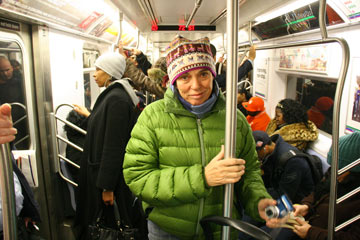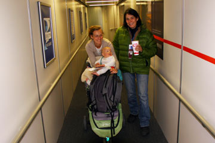
Da Hjaltes far pludselig er død har vi forladt Grønne for nogle dage. Hjalte, Ida, Elliot og jeg tog af sted med fly fra fra New York om eftermiddagen. Da vi mødte vores søn Emil i København var det blevet morgen. I en lejet bil kørte vi mod Langeland hvor hele familien samledes. Mandag flyver Hjalte og jeg tilbage til New York for at sende Grønne med skib til Spanien.
Nina
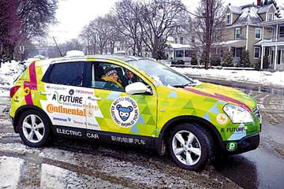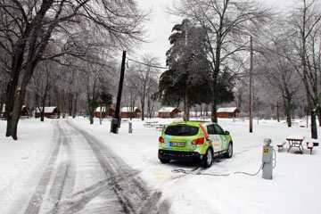
Vi snakkede med journalist Bill Huges fra the Bloomsburg Press, som fotograferede os og lavede et interwiew. Derefter skovlede vi et tykt lag is og sne af Grønne som stod parkeret udenfor White Birch bed and breakfast. Det begyndte at regne og vi kørte videre gennem det dårligste vejr nogensinde. Imens regnen frøs til is på ruderne, pjaskede Grønne sig gennem et tykt lag tøsne og vejsalt. Vi stoppede ved en RV camping og fik Grønne sat til at lade. Til os var der kun chokolade, kiks og chips. Vi sad så tre timer indendøre med over os.
Nina
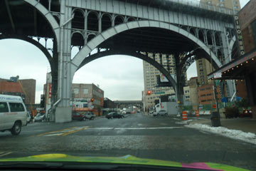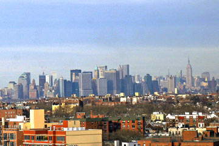
Se, der er Hudsonfloden, der er skyskraberne på Manhattan! Hjalte og jeg måtte råbe vores begejstring ud. Grønne har nu kørt os tværs over USA fra San Francisco til New York, over 7000 kilometer! Vi stoppede på hjørnet af Harlem og Central Park, lige ud for det hus hvor vi skulle besøge nogle venner. Rita tog godt imod os og viste os den betagende udsigt fra 9.sal. Bagefter blev Grønne sat til opladning på den lokale tankstation, hvor fem mand først måtte flytte på en Pepsi-automat for at finde et passende elstik. Da det var ordnet var det tid til et glas rødvin sammen med Rita og en god lang snak om livet i New York.
Nina
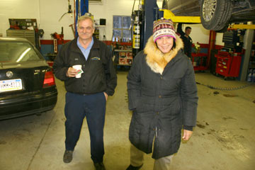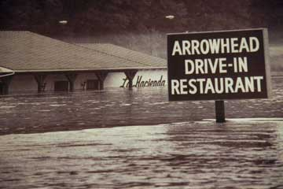
Den afstand en almindelig bil kan køre på et par timer bruger Grønne en hel dag på. Som de tidlige polarforskere kæmper vi os frem, kilometer efter kilometer med frost i tæerne. Vi forstår næsten ikke hvordan det kan gå så langsomt fremad. Man skal nok have prøvet det for at forstå det. Nattens strøm havde kun været 120 volt, så Grønne var kun halvt opladet da vi startede i morges. Formiddagens sidste 10% strøm gik til at lede efter strøm i nærheden af Milton. Vi fandt det på Jake's bilværksted. Da der var en ny type 100 ampere stikkontakt måtte Hjalte til at kombinere nogle løse ben, og det ene ben måtte slibes til. Nu står Grønne og lader med 220 volt. Imens sidder vi og spiser frokost og æblekage i en 4-5 timer på The Arrowhead Restuarant indtil Grønne er så opladet at vi kan komme videre. Udenfor flyder den store Susquehanna flod forbi. Hele området, restaurant og bilværksted og det hele, var oversvømmet i december og sådan er det næsten hvert år. Men ingen flytter. Restauranten har ligget her i 60 år og klaret 20 oversvømmelser.
Nina og Hjalte
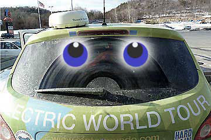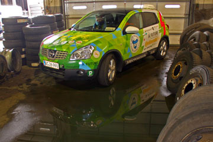
Jeg Grønne holder det snart ikke ud længere!. Jeg er dækket af vejsalt. Det svier over hele kroppen, under maven, på bagenden og over det hele. Og når Nina eller Hjalte rører ved mig bliver de helt hvide på tøjet. Jeg kører så blidt og lydløst som en engel, og så står de og siger at jeg aldrig været så snavset. Heldigvis har jeg stadig gode tykke slidbaner, så jeg kan stå fast i is og sne. Nina var derimod lige ved at vælte i går. Pludselig skøjtede hun af sted på et ben imens hun spjættede med armene. Slidbanerne under hendes sko er elendige, hun burde skifte til Continental dæk. Hjalte greb hendes computer, og hun fandt balancen igen. Det med at gå på sine egne ben er heller ikke populært i USA. Her kører man i bil fra vugge til grav.
Hilsen fra Grønne.
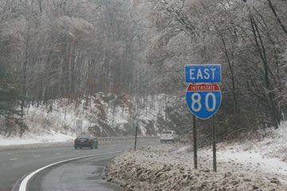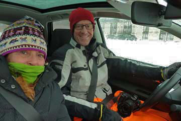
Iskold morgen. Vi kører østpå ad Interstate 80 som går gennem Pennsylvanias store skove og lave bjerge. Hvidt og gråt og blå flænger i skyerne. Det er et nordisk landskab. Vi har advarselsblikket tændt og lastbilerne stryger forbi. Midt på dagen spiser vi på et truckstop og ved femtiden sætter vi ud på dagens anden etappe i mørke. Det gælder om at komme så langt som muligt. I god til kørte vi væk fra motorvejen for at finde et motel. Straks vi så bygningen var vi klar over at der ville vi ikke kunne få strøm ud til Grønne - huset var som en fæstning og værst af alt: central aircondition med lukkede installationer. Den næste adresse vi kørte efter viste sig at være en beboelsesejendom. En bed and breakfast som vi ringede til havde telefonsvarer på. Det næste motel vi fandt fyrede med olie og havde ingen 220 volt strøm. På den sidste procent strøm kørte vi til et motel udenfor byen. Uheldigvis kunne vi ikke få mere end 110 volt ud af stikket på værelset. Men vi var nødt til at blive, Grønne kunne ikke mere. Vi havde ikke været forberedt på at køre forgæves hele fire gange!
Nina og Hjalte